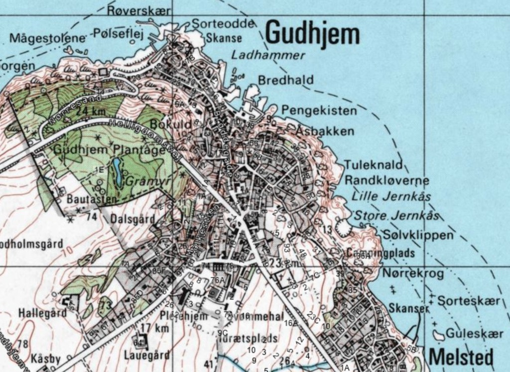

Kysten omkring Gudhjem rummer en række badesteder, som bruges af både lokale og besøgende gennem hele sommeren.
Nogle steder egner sig til rolige svømmeture. Andre er kendt for klipper, udspring og dybt vand tæt på land.
Her har vi samlet nogle af de steder, vi selv bruger og vender tilbage til.
Klipperne omkring Gudhjem
